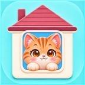
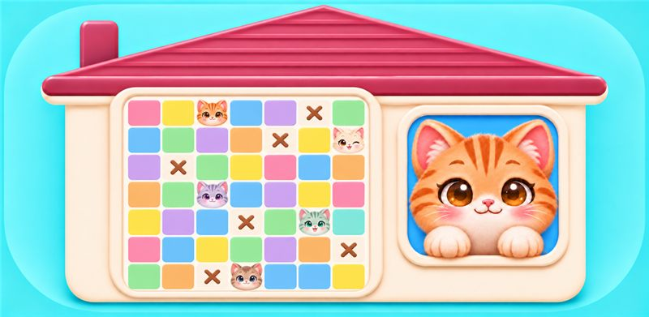

Кошкин домCat House: Color Sudoku
Найдите спрятавшихся котят в цветных окошках домика. Для каждого ряда, столбца и цвета найдите своё место — и помните, что котята не могут касаться друг друга.

Цвета, котята и логика
Открывайте котят двойным нажатием, отмечайте пустые клетки крестиками и постепенно решайте головоломку. Уровни меняют размер и сложность; каждый день доступна отдельная задача.
Один котёнок
В каждом ряду, столбце и цветной области прячется один котёнок.
Без соседей
Котята не соприкасаются, даже по диагонали.
Подсказки
Логические подсказки помогают увидеть следующий шаг, когда задача становится трудной.
Поддержка и конфиденциальность
About Cat House: Color Sudoku
Find the hidden kittens in a colorful logic puzzle. Each row, column, and color area has one kitten, and kittens cannot touch, even diagonally. Mark empty cells, uncover kittens, and enjoy puzzles of growing difficulty.
Support: n.choi.sw@gmail.com · Privacy Policy